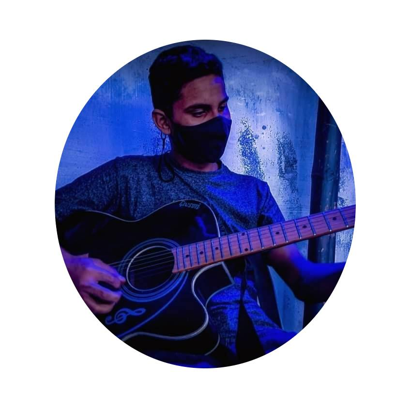

Welcome To
RAHIB's Website
Web Developer
I am a basic web developer. I love to explore many new things and learn new topics. I want to be a famous web developer. I want to be a freelancer as well. Everyone please pray for me
Thank You
Hire Me
Guitarist
I also play guitar. It has been almost 5 years since I have started to learn playing guitar. I love this passion the most. I play guitar with much vigor and interest than doing anyother work. I love this very much.
Besides, I have an youtube channel where I post my instrumentals. I try to maintain regulerity in posting new videos but it becomes hard for me to maintain regulerity due to study.
My Youtube ChannelA Music Producer
Besides plyaing guitars, I like to produce songs. I try to compose different songs regularly. I compose all my instrumentals by my own. I use FL Studio 20 for the composition perpose.
Again, I make different types of beats and publish them in my facebook page. You can find my facebook page from the button below.
My Facebook Page
